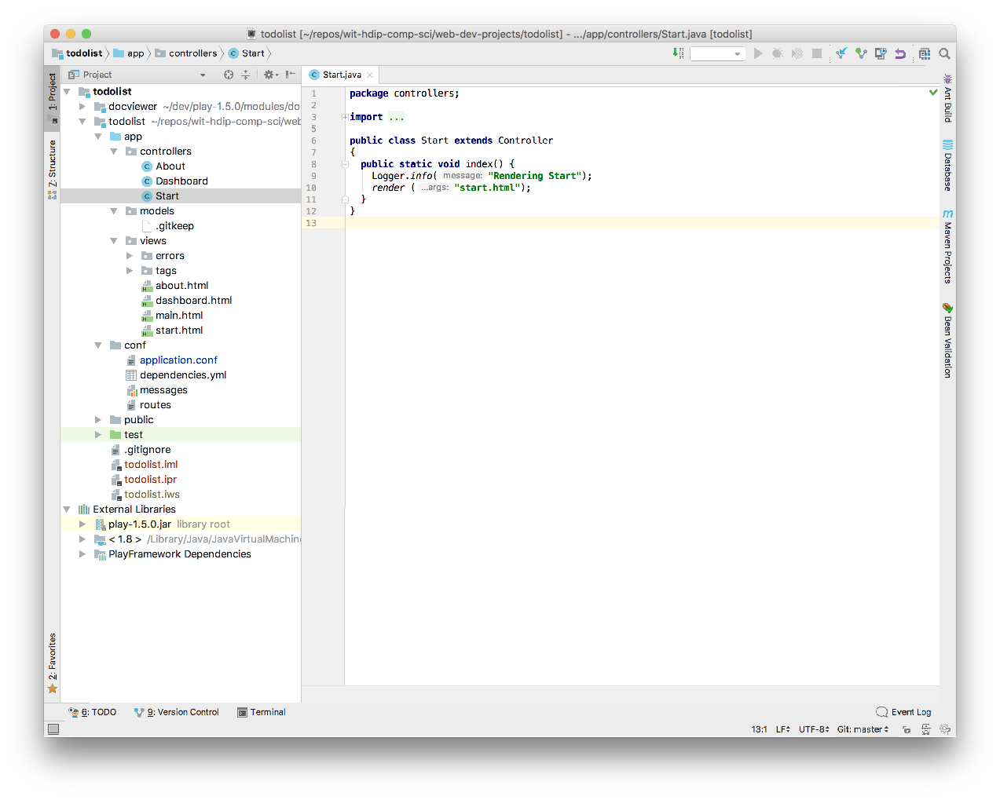
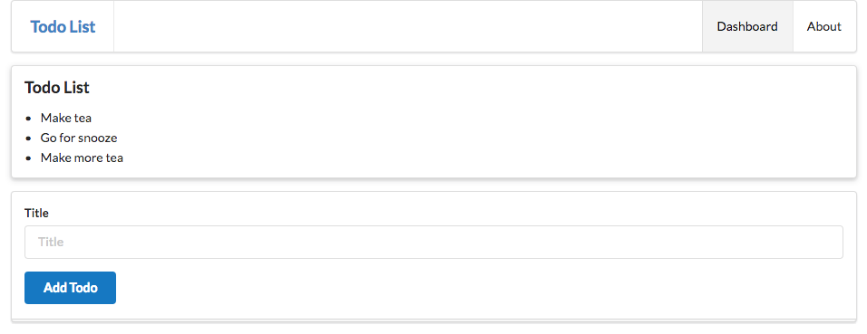
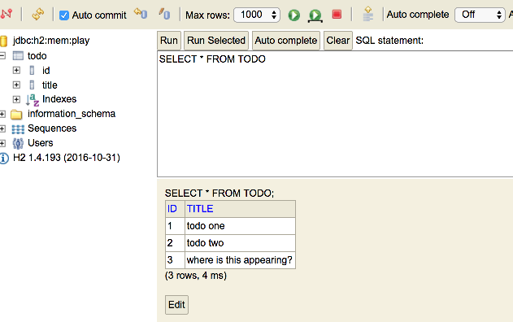
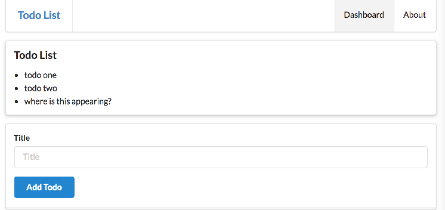
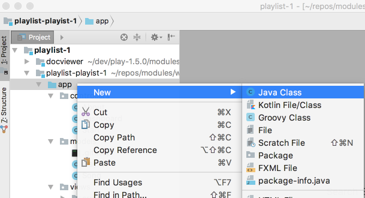
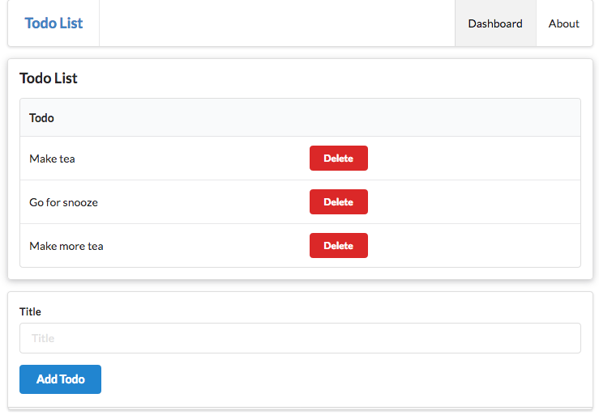
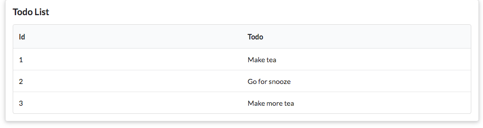

Objectives
Develop a completely new application, using the techniques we have explored so far.
Create New Application
Each time we start a new application, we will 'clone' a starter app like this:
Create New Project
Create a new play project using this command:
git clone https://github.com/wit-hdip-comp-sci-2019/play-template-1The shell should show something like this:
Cloning into 'play-template-1'...
remote: Counting objects: 66, done.
remote: Compressing objects: 100% (47/47), done.
remote: Total 66 (delta 9), reused 66 (delta 9), pack-reused 0
Unpacking objects: 100% (66/66), done.Rename Project
The default name of the project should be changed now. This will require the following procedure:
- Rename the folder
play-template-1. Call the foldertodolistinstead. Use Sublime Text to edit this file:
playlist/conf/application.conf. The first three lines contains the following:# This is the main configuration file for the application. # ~~ application.name=play-template-1Change
play-template-1above totodolist, and save the file:# This is the main configuration file for the application. # ~~ application.name=todolist
Import into Idea
Still in the shell, and in the project folder enter the following command:
play idealizeYou should get this response:
~ _ _
~ _ __ | | __ _ _ _| |
~ | '_ \| |/ _' | || |_|
~ | __/|_|\____|\__ (_)
~ |_| |__/
~
~ play! 1.5.2, https://www.playframework.com
~
~ OK, the application is ready for Intellij Idea
~ Use File, Open Project... to open "todolist.ipr"
~Launch Idea eclipse, and select Open. Select the todlist folder and presse Open. The project should open like this:

Open a command prompt inside the todolist folder, and run the app:
play runVerify that the skeleton app is available:
Do not proceed to the next step until the above procedure has been completed without any errors.
Static Todo List
Replace the contents of the Dashboard view with the following:
app/views/dashboard.html
#{extends 'main.html' /}
#{set title:'Dashboard' /}
#{menu id:"dashboard"/}
<section class="ui raised segment">
<header class="ui header">
Todo List
</header>
<div class="ui bulleted list">
<div class="ui item"> Make tea</div>
<div class="ui item"> Go for snooze</div>
<div class="ui item"> Make more tea</div>
</div>
</section>
<form class="ui stacked segment form" action="/dashboard/addtodo" method="POST">
<div class="field">
<label>Title</label>
<input placeholder="Title" type="text" name="title">
</div>
<button class="ui blue submit button">Add Todo</button>
</form>Also, change the title in the menu:
app/views/tags/menu.html
<nav class="ui menu">
<header class="ui header item"> <a href="/"> Todo List </a></header>
<div class="right menu">
<a id="dashboard" class="item" href="/dashboard"> Dashboard </a>
<a id="about" class="item" href="/about"> About </a>
</div>
</nav>
<script>
$("#${_id}").addClass("active item");
</script>The Dashboard will look like this:

Notice that the dashboard has a form - with a single text entry - the user can interact with.
Todo Model
In the models package, bring in the following class:
app/models/Todo.java
package models;
import play.db.jpa.Model;
import javax.persistence.Entity;
@Entity
public class Todo extends Model
{
public String title;
public Todo(String title)
{
this.title = title;
}
}This class models a simple todo item - containing a string.
Add Todo Route + Action
Examine the dashboard form again - particularly the action attribute of the <form> element:
...
<form class="ui stacked segment form" action="/dashboard/addtodo" method="POST">
...This is the route we need to support. i.e. we need an entry in our routes file to match this route with a controller method.
Here it is:
conf/routes
...
POST /dashboard/addtodo Dashboard.addTodo
...Add the above to the routes file just under the existing /dashboard route.
Now add a new method in Dashboard class to handle the route:
public static void addTodo(String title)
{
Todo todo = new Todo(title);
todo.save();
Logger.info("Adding Todo" + title);
redirect("/dashboard");
}Run the application now - and verify that you can add a todo item. The UX will not display them yet however (we still have the static elements).
We can view them in the database however:
We should see something like this:

Todo UX
In order to display the Todos - we need to change the Dashboard.index() method such that it fetches all of them from the database, and sends them to the view:
app/controllers/Dashboard.java
public static void index()
{
Logger.info("Rendering Dashboard");
List<Todo> todolist = Todo.findAll();
render("dashboard.html", todolist);
}Now we can start to display them in the dashboard view. Replace just the todolist section with the following:
app/views/dashboard.html
...
<section class="ui raised segment">
<header class="ui header">
Todo List
</header>
<div class="ui bulleted list">
#{list items:todolist, as:'todo'}
<div class="ui item"> ${todo.title} </div>
#{/list}
</div>
</section>
...We have removed the static todo items, and we should now be rendering the todo items as submitted by the user (and stored in the database).

Try adding more todos - and verify that they appear in the list after you press Add Todo. Also, verify that you can see them in the database.
Exercise 1: Yaml + Bootatrap
Using a new yaml file, which you create in the conf folder - seed the database with 3 todo items. The yaml file is usually called data.yml. Here is an example of a single todo item:
Todo(t1):
title: Make teaRemember, you will need to introduce the bootstrap class into the project:
import java.util.List;
import play.*;
import play.jobs.*;
import play.test.*;
import models.*;
@OnApplicationStart
public class Bootstrap extends Job
{
public void doJob()
{
Fixtures.loadModels("data.yml");
}
}This must be created in the app folder of the project

This is covered in detail in Lab08a:
To see if this works as expected - stop the app (Ctrl+C in the console that started the app) - and re start it. This time it should display the todo items loaded from the yaml file.
Try adding a few more, but remember, this is loaded just once on application startup. So they will not appear until you restart the app again.
Exercise 2: Tables
Change the todo view segment in the dashboard view:
app/views/dashboard.html
...
<section class="ui raised segment">
<header class="ui header">
Todo List
</header>
<div class="ui bulleted list">
#{list items:todolist, as:'todo'}
<div class="ui item"> ${todo.title} </div>
#{/list}
</div>
</section>
...Have them display the todo items in a 2 column table instead of a list. Here is an example of a 2 column table to get you started.
<table class="ui fixed table">
<thead>
<tr>
<th>title 1</th>
<th>title 2</th>
</tr>
</thead>
<tbody>
<tr>
<td> col 1</td>
<td> col 2 </td>
</tr>
</tbody>
</table>The dashboard should look like this:

Exercise 3: Delete button
Include a 'delete' button into the second column of the todo table to look like this:

Examples of various style of buttons here:
Leave the href for the button as # for the moment.
Exercise 4: Delete Implementation
Introduce the following route into the application:
conf/routes.html
GET /dashboard/deletetodo/{id} Dashboard.deleteTodoIn the view, we can implement the href for the button:
...
<td> <a href="/dashboard/deletetodo/${todo.id} " class="ui tiny red button"> Delete </a> </td>
...This requires this method in the Dashboard controller
public static void deleteTodo(Long id)
{
// Implementation here...
// ...
redirect("/dashboard");
}How would you go about deleting the todo item from the application model? Some hints below (it is not that hard!)
Hints
To find a todo in the database:
Todo todo = Todo.findById(id);To remove some object from the database:
obj.delete();Exercise 5: Admin Feature
Introduce a new route into the app:
Which should display:

This will involve:
- a new route
- a new controller called Admin
- a method in that controller that fetches all todos and sends them to a new view
- call this new view
admin.html
Hint
Exercise 2 Solution in Lab08b implemented something similar:
Exercises
Solution - including all exercises:
Exercise 1: Open and Run Sample Solution
First, download the zip of the project above and unzip. Then run:
play idealizefrom inside the unzipped folder. In Idea, open the project in a 'New Window' - so that you can compare the solution with your own version of todolist.